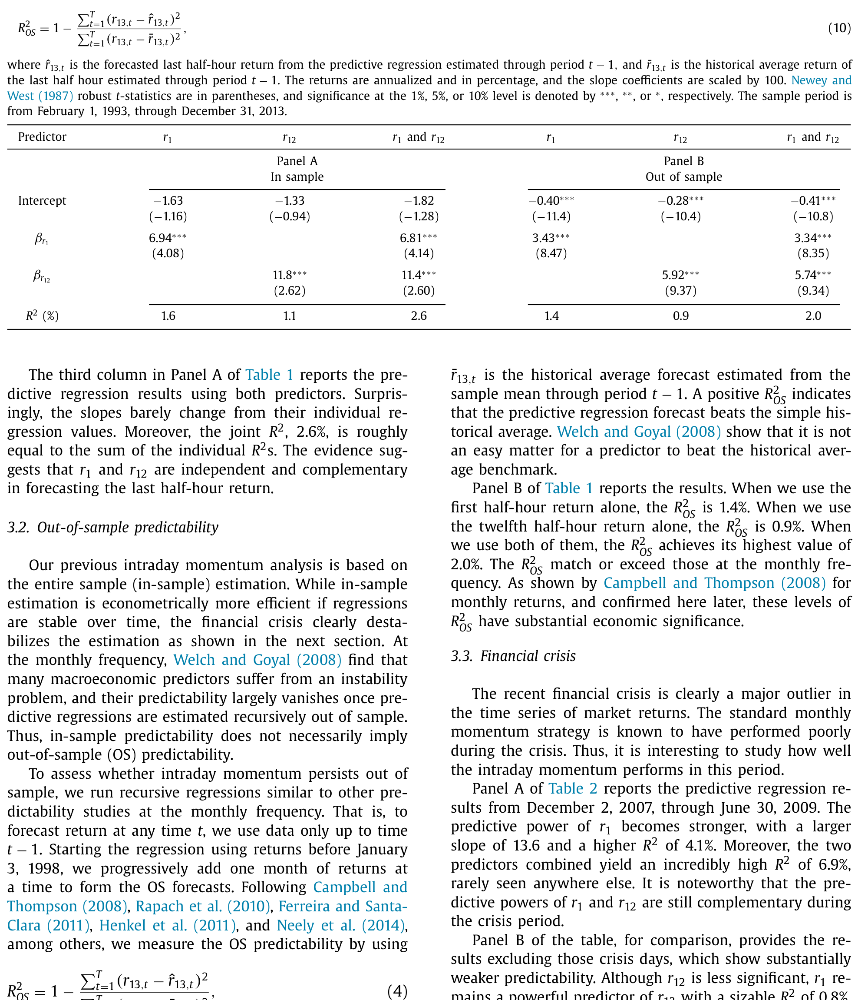
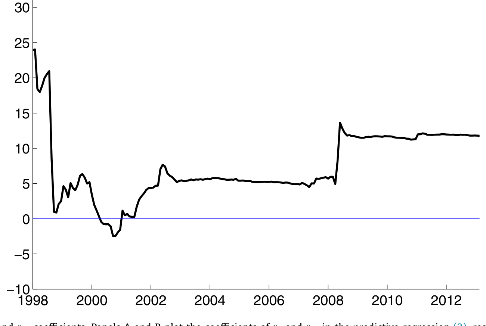
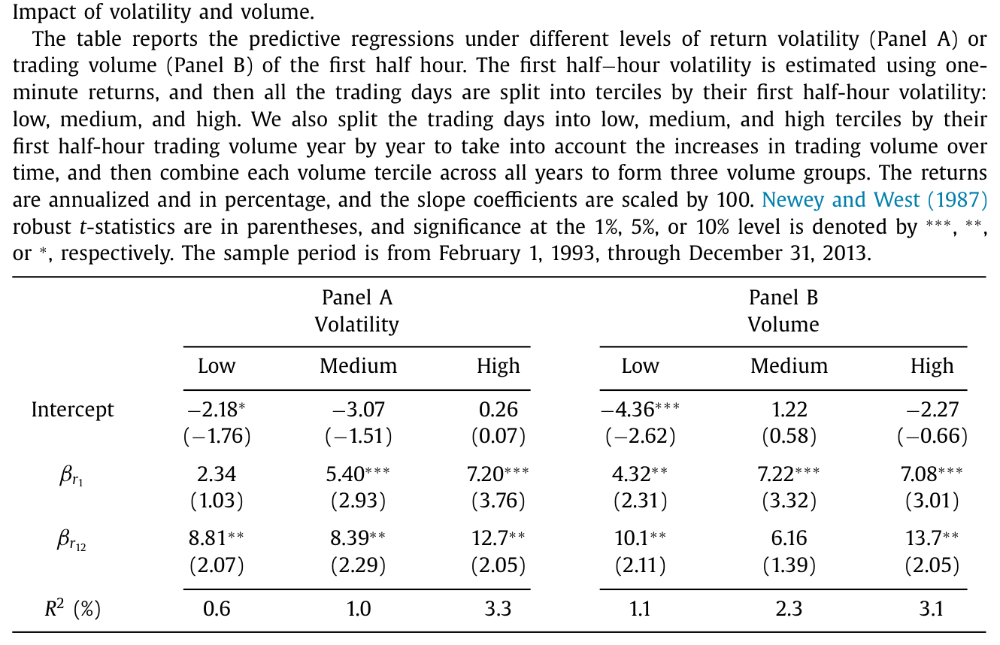
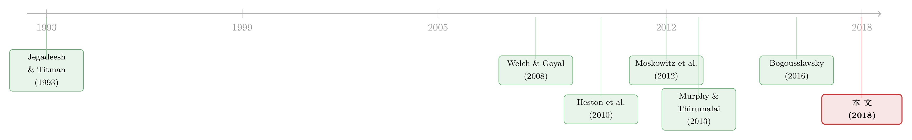

一天里，只有两个半小时真正重要
本文读的是 Gao, Han, Li & Zhou (2018, JFE)：用 1993–2013 年标普 500 ETF（SPY）的高频数据，他们发现一个干净得令人意外的规律——一个交易日里第一个半小时的市场收益，能正向预测最后一个半小时的市场收益。这种「日内动量」不仅统计显著（单变量 R² = 1.6%），而且经济上可观（择时策略夏普比率 1.08），在波动大、成交高、衰退期、宏观数据发布日尤其强。
1 一个被频率「藏起来」的问题
动量 (momentum) 大概是资产定价里最顽固的一个异象。自 Jegadeesh and Titman (1993) 以来，我们就知道：过去半年到一年里的赢家，往往在接下来的半年到一年里继续赢；输家继续输。后来这条线越铺越宽——有人把它推到全球股市，有人把横截面动量改写成时间序列动量 (time-series momentum)：一项资产过去 12 个月的收益，正向预测它自己未来的收益（Moskowitz, Ooi and Pedersen, 2012）。
但请注意，几乎所有这些研究，都停在月度或周度的频率上。
于是一个自然的问题是：如果把时钟一直往下拨，拨到一天之内，动量还在吗？换句话说，市场早上的走势，能不能告诉我们它下午收盘前会怎么走？
这个问题听上去有点像民间股评，却恰恰戳中了一个严肃的命题：日内的市场到底有多有效，以及那群越来越庞大的高频交易者，究竟在价格里留下了什么样的脚印。本文就是第一篇系统研究市场层面日内时间序列动量的论文。
2 为什么偏偏是「第一个」和「最后一个」半小时？
要讲清楚这篇文章，得先回答一个看似琐碎、其实是全文支点的问题：一天有十三个半小时，为什么作者死死盯住头一个和尾一个？
作者给的理由很朴素，却环环相扣。首先，几乎所有财报和绝大多数重要宏观新闻，都在开盘前发布。所以市场往往不会平开——开盘价已经把隔夜的新信息「吃」了进去。而消化这批信息大约需要 30 分钟，这从开盘头半小时极高的成交量和波动率就能看出来；之后市场逐渐冷却，直到尾盘才重新活跃。日内的成交量和波动率都呈现 U 形。
接着，尾盘为什么重要？因为收盘价不是一个普通的价格。正如 Cushing and Madhavan (2000) 和 Foucault, Kadan and Kandel (2005) 所强调的，机构投资者对收盘价有着近乎执念的重视——它被用来计算组合收益、核算基金净值、对各类合约做盯市。与此同时，做市商也急于在收盘前把库存甩出去，以免承担隔夜风险。
于是头半小时（信息冲击）和尾半小时（机构与做市商的集中行动）成了一天里最关键的两端。本文要做的，就是去检验这两端的收益之间，是不是真的存在正相关。
3 识别策略：把一天切成十三块
作者用最actively交易的 SPY 来代表市场，数据来自 TAQ 高频数据库。一个交易日被切成 13 个半小时收益，定义为
$$ r_{j,t} = \frac{p_{j,t}-p_{j-1,t}}{p_{j-1,t}}, \qquad j = 1,\dots,13 $$
这里 \(p_{j,t}\) 是第 \(t\) 天第 \(j\) 个半小时末的价格。关键的一笔在于 \(j=1\) 的处理：作者令 \(p_{0,t}=p_{13,t-1}\)，也就是用前一交易日的收盘价作为基准，从 4:00pm 一路算到次日 10:00am。这样一来，所谓「第一个半小时收益」 \(r_1\) 其实裹挟了整个隔夜的信息——这是全文最巧妙的设定，它把「开盘前发生的一切」压进了一个可观测的变量里。
而被预测的对象 \(r_{13}\)，是从 3:30pm 到 4:00pm 的最后半小时收益。
核心回归朴素得不能再朴素。先看单变量：
$$ r_{13,t} = \alpha + \beta\, r_{1,t} + \epsilon_t $$
然后，一个自然的追问是：倒数第二个半小时 \(r_{12}\)（即收盘前的那段惯性）会不会也有预测力？于是扩展成双变量回归——这也是全文的中心方程：
识别上没有花哨的工具变量或断点——这是一篇预测性回归 (predictive regression) 文章，干净利落。它的可信度来自三点：预测变量 \(r_1\) 严格地用 \(t-1\) 日及更早的信息构造（隔夜 + 头半小时），不存在前视偏差；标准误用 Newey-West (1987) 稳健处理序列相关；最关键的是，作者不满足于样本内，还做了样本外 (out-of-sample, OS) 的递归回归。
样本外的衡量标准是
$$ R^2_{OS} = 1 - \frac{\sum_{t=1}^{T}\left(r_{13,t}-\hat r_{13,t}\right)^2}{\sum_{t=1}^{T}\left(r_{13,t}-\bar r_{13,t}\right)^2} $$
其中 \(\hat r_{13,t}\) 是用截至 \(t-1\) 期数据估计出的回归预测值，\(\bar r_{13,t}\) 则是同期的历史均值。\(R^2_{OS}>0\) 意味着预测回归打败了「拍脑袋取历史平均」这个朴素基准——而 Welch and Goyal (2008) 早就告诉我们，在月度频率上，能稳定打败历史均值的预测变量寥寥无几。
4 主要结果：1.6% 的 R² 为什么是个大数
先看样本内。\(r_1\) 正向预测 \(r_{13}\)，斜率为 6.94（系数乘以 100），t = 9.08，在 1% 水平上显著，单变量 R² = 1.6%。
你可能会撇嘴：1.6% 而已？但这恰恰是本文最容易被低估的地方。在月度频率上，绝大多数预测变量的 \(R^2\) 还达不到这个水平（参见 Rapach and Zhou, 2013）。而且——同样的 \(R^2\)，在更高的频率上更值钱：因为你每天都能据此交易一次，而不是一个月才一次。\(r_{12}\) 单独看 R² = 1.1%；当 \(r_1\) 与 \(r_{12}\) 同时入回归，两个斜率几乎纹丝不动，联合 R² = 2.6%，差不多正好是两个单变量 \(R^2\) 之和——这说明 \(r_1\) 与 \(r_{12}\) 在预测尾盘上相互独立、彼此互补。

Table 1
样本外呢？\(R^2_{OS}\) 用 \(r_1\) 单独是 1.4%，用两个变量是 2.0%——依旧高于月度频率的典型水平。这一步至关重要：它说明这不是样本内过度拟合出来的幻觉。
那么，谁是主力？作者把样本拆开来看，结论很有意思：\(r_1\) 的预测力，无论有没有危机都稳稳显著；而 \(r_{12}\) 的预测力，主要集中在金融危机那段。危机期间（2007/12–2009/6），\(r_1\) 的斜率飙到 13.6，\(R^2\) 升到 4.1%，两变量联合 R² = 6.9%，高得罕见。把危机日剔除后，\(r_1\) 仍然显著（联合 R² = 1.1%），但 \(r_{12}\) 就基本失声了。
这正是为什么作者强调 \(r_1\) 才是日内动量真正的发动机。Fig. 1 把 \(r_1\) 和 \(r_{12}\) 的系数随时间递归估计画了出来：\(r_1\) 的斜率在危机前相当稳定，危机后因受其影响而抬升；而 \(r_{12}\) 的斜率本就更跳，危机后窜得更高。

Figure 1: Time series of r 1 and r 12 coefficients. Panels A and B plot the coefficients of r 1 and r 12 in the predictive regression (3) , respective
于是一个反转出现了：日内动量并不是均匀地存在于每一天。它的强弱，系统性地随着「市场紧张程度」起伏。作者把交易日按头半小时波动率分成三档：低波动日 R² = 0.6%，\(r_1\) 系数甚至不显著；中波动日升到 1.0%；高波动日则跳到 3.3%，是低波动日的五倍多。按成交量分组也是同样的图景。这与 Zhang (2006) 的发现一脉相承——不确定性越大，趋势的延续性越强。

Table 3
更进一步，作者发现预测力在衰退日、低单笔成交规模日、以及重大宏观数据发布日（密歇根消费者信心指数、GDP、CPI、FOMC 纪要）上也更强。换句话说，越是「信息浓度高、注意力分散」的日子，早盘的走势越能预告尾盘。
5 这值多少钱？
统计显著是一回事，能不能赚钱是另一回事。作者算了两笔账。
第一笔，对一个风险厌恶系数为 5 的均值-方差投资者，相比忽略这个预测变量，依据 \(r_1\) 择时能带来 6.02% 每年的「确定性等价收益」(certainty equivalent gains)；若再加上 \(r_{12}\)，进一步升到 6.18%。第二笔，更直观的市场择时：只用 \(r_1\) 的符号来决定尾盘做多还是做空，年均收益 6.67%，标准差仅 6.19%，夏普比率高达 1.08；作为对比，简单的每日买入持有策略年均收益 6.04%、标准差却高达 20.57%，夏普比率只有 0.29。即便扣掉交易成本（2001 年报价小数化后成本已大幅下降），这份超额收益依然显著。
6 机制：是谁让早盘的趋势延续到了尾盘？
到这里，真正关键的一步来了——为什么会有日内动量？作者给出两套微观基础，且都不是自己凭空发明的。
第一套来自 Bogousslavsky (2016) 的不频繁再平衡 (infrequent rebalancing) 模型。由于资本的「慢移动」和种种制度因素，一部分机构在头半小时再平衡组合，另一部分（或同一批）机构在尾盘再平衡；如果尾盘的交易方向与头半小时一致，就会制造出我们观测到的日内动量。Murphy and Thirumalai (2013) 用真实的经纪账户数据，提供了机构「重复性净下单」的直接证据。
第二套是晚到信息交易者 (late-informed traders)。有些投资者收到早盘信息较晚，或处理信息较慢；对他们而言，等到尾盘再交易是更优的选择——既能避开隔夜风险，又能享受尾盘的高流动性。这批人在尾盘的交易方向，恰好与头半小时同向，于是同样催生了动量。
这两套机制都很自然地解释了「为什么是头尾两端」，也解释了为什么波动率越高、信息越多的日子动量越强。值得一提的是，这条研究脉络与「隔夜 vs 日内」收益的争论密切相关——关于一只股票的隔夜收益与日内收益如何此消彼长，可参见《白天的「过度纠正」：当套利者在拔河里站错了队》。
7 文献脉络
把这篇文章放回它所在的家谱里，会看得更清楚。
最上游是 Jegadeesh and Titman (1993) 的横截面动量。之后，动量被推广到时间序列维度：Moskowitz, Ooi and Pedersen (2012) 证明一项资产过去 12 个月的收益能预测自身未来。与此并行的，是一条关于日内收益规律的支线——Heston, Korajczyk and Sadka (2010) 等发现个股收益在跨日的相同半小时区间上存在持续性，Murphy and Thirumalai (2013) 把它归因于机构的重复下单，而 Bogousslavsky (2016) 用不频繁再平衡模型给出了理论解释。
但请注意，所有这些日内研究都是横截面的（个股相对个股）。本文的独特位置在于：它第一次研究市场层面的日内时间序列动量——不是「哪只股票早上强下午也强」，而是「整个市场早上强，下午收盘前也强」。同时，它把样本外检验、经济意义评估这一整套源自月度可预测性文献（Welch and Goyal, 2008；Campbell and Thompson, 2008）的工具，搬到了日内频率上。

8 评论与延伸（Q&A + 研究方向）
(a) 几个可能的疑问
Q：这和经典的（横截面）动量是一回事吗？
不是。经典动量是横截面、月度的——买过去的赢家、卖过去的输家。本文是时间序列、日内的：用同一资产（市场）今天早上的收益，预测它今天尾盘的收益。两者唯一的共性是「趋势延续」这个直觉，机制和频率完全不同。
Q：1.6% 的 \(R^2\) 真的算高吗？会不会是在小题大做？
关键在频率。月度预测里能稳定做到 1.6% 的预测变量极少（Rapach and Zhou, 2013）；而日内频率下，你每天都能据此下注一次，信息被利用的次数远多于月度。再加上样本外 \(R^2_{OS}\) 也有 1.4%–2.0%，能打败历史均值基准（这本身就很难，见 Welch and Goyal, 2008），所以这个数并不小。
Q：会不会只是危机那段时间的特例？
不会。作者专门把危机日剔除后重做，\(r_1\) 依旧显著（联合 \(R^2\) 仍有 1.1%）。倒是 \(r_{12}\) 的预测力主要来自危机期。所以真正稳健的发动机是 \(r_1\)，而非 \(r_{12}\)。
Q：这是不是套利成本吃不掉的「真异象」？
作者声称扣除合理交易成本后超额收益仍显著，尤其在 2001 年小数化、交易技术进步使成本大幅下降之后。但这是用 SPY 这种极高流动性资产做的；换到流动性差的标的，结论会弱化——文中也提到样本外那些 ETF 因流动性低，预测力和确定性等价收益都更小。
Q：两套机制能被区分开吗？
文中没有把「不频繁再平衡」和「晚到信息交易」彻底拆开——它们都预测同向的尾盘交易，观测上难以分辨。作者更多是论证「数据与两套机制都相容」，而非做一个能二选一的判别检验。这是诚实的，但也留下了空间。
Q：用隔夜收益直接预测，会不会更干净？
作者在脚注里说，用纯隔夜收益（捕捉开盘前全部新闻）作为预测变量，结果类似。这其实强化了「信息冲击」这条线：\(r_1\) 之所以有用，很大程度上是因为它裹挟了隔夜信息。
(b) 几个可能的研究问题与提案
1. 公司债市场有没有日内动量？
【经济故事】公司债以做市商为中心、流动性远逊于股票，库存管理和尾盘甩货的动机可能更强，理论上日内动量应当更明显。【可行性】中。需要 TRACE 的日内逐笔数据（分钟级），但很多债券一天只成交几笔，构造稳定的「头半小时/尾半小时收益」困难，可能只能在最活跃的基准券或债券 ETF（如 LQD、HYG）上做。识别上沿用本文的预测性回归即可。
2. 外资持有比例高的资产，日内动量是更强还是更弱？
【经济故事】外资交易者更可能是「晚到信息交易者」（时区差、信息处理慢），按本文第二套机制，他们持有越多，尾盘的同向交易越多，动量应更强。【可行性】中低。需要把日内动量强度与资产层面的外资持有比例匹配，外资持有数据频率低（季度）、且多为持仓而非交易，识别外资的日内行为很难，更适合用某些有清晰外资准入变化的市场做事件研究。
3. 日内动量与流动性供给的关系。
【经济故事】本文发现高波动、高成交日动量更强，而这些恰是做市商库存压力最大的日子。若能把尾盘的价格冲击拆成做市商的存货成分，或许能直接验证「不频繁再平衡/库存甩货」机制。【可行性】高。SPY 的 TAQ 数据本身就含报价深度，可构造 Amihud (2002) 式或价差类流动性指标，按流动性分组重做回归，识别清晰、数据现成。
4. 算法/高频交易普及后，日内动量是被「吃掉」了还是被放大了？
【经济故事】本文样本止于 2013 年，正值高频交易爆发期。一个开放问题是：套利者涌入后，这个规律是否衰减？还是说高频做市商的库存行为反而强化了尾盘同向交易？【可行性】高。把样本延伸到 2014 年至今，做滚动窗口的 \(R^2_{OS}\) 与系数衰减检验即可，数据可得、识别直接。
9 我的判断
这篇文章的贡献不在于方法的复杂，恰恰在于它的简单和干净：一个谁都能在收盘前 30 分钟实施的规则，一个统计与经济意义双双过关的结果，外加两套现成的微观基础。它把「动量」这条做了三十年的研究线，第一次扎扎实实地拉进了市场层面的日内时间序列这一格。在一个充斥着 p-hacking 嫌疑的因子动物园里，这种「频率上的新发现 + 样本外验证 + 经济机制」的组合，是难得的踏实。
但我对识别仍有两点保留。其一，机制是「相容」而非「证明」。不频繁再平衡和晚到信息交易在观测上几乎无法区分，文章给出的是一个相容性论证，而不是一个能排除替代解释的判别检验——比如，它没有完全排除「头尾两端共同暴露于某个日内风险因子」这种纯风险解释。其二，结果高度依赖 SPY 的极致流动性与样本期。样本外那些低流动性 ETF 的预测力明显更弱，提示这个规律可能更像是「高流动性资产上的协调交易痕迹」，而非普适的市场规律。
后续我最想看到的，是把这条规律延伸到 2013 年以后、并直接对接做市商库存数据的研究：如果日内动量在高频交易全面普及后依然顽固，那它就不只是一个可预测性异象，而是市场微观结构里一道结构性的印记。
参考文献
- Amihud, Y. (2002). Illiquidity and stock returns: cross-section and time-series effects. Journal of Financial Markets 5, 31–56.
- Bogousslavsky, V. (2016). Infrequent rebalancing, return autocorrelation, and seasonality. Journal of Finance 71, 2967–3006.
- Campbell, J. Y., & Thompson, S. B. (2008). Predicting excess stock returns out of sample: can anything beat the historical average? Review of Financial Studies 21, 1509–1531.
- Cushing, D., & Madhavan, A. (2000). Stock returns and trading at the close. Journal of Financial Markets 3, 45–67.
- Foucault, T., Kadan, O., & Kandel, E. (2005). Limit order book as a market for liquidity. Review of Financial Studies 18, 1171–1217.
- Gao, L., Han, Y., Li, S. Z., & Zhou, G. (2018). Market intraday momentum. Journal of Financial Economics 129, 394–414.
- Heston, S. L., Korajczyk, R. A., & Sadka, R. (2010). Intraday patterns in the cross-section of stock returns. Journal of Finance 65, 1369–1407.
- Jegadeesh, N., & Titman, S. (1993). Returns to buying winners and selling losers: implications for stock market efficiency. Journal of Finance 48, 65–91.
- Moskowitz, T. J., Ooi, Y. H., & Pedersen, L. H. (2012). Time series momentum. Journal of Financial Economics 104, 228–250.
- Murphy, D., & Thirumalai, R. S. (2013). Short-term return predictability and repetitive institutional net order activity. Journal of Financial Research 40, 455–477.
- Newey, W. K., & West, K. D. (1987). A simple, positive semi-definite, heteroskedasticity and autocorrelation consistent covariance matrix. Econometrica 55, 703–708.
- Rapach, D., & Zhou, G. (2013). Forecasting stock returns. In Handbook of Economic Forecasting, North-Holland, Amsterdam, 328–383.
- Welch, I., & Goyal, A. (2008). A comprehensive look at the empirical performance of equity premium prediction. Review of Financial Studies 21, 1455–1508.
- Zhang, X. F. (2006). Information uncertainty and stock returns. Journal of Finance 61, 105–137.